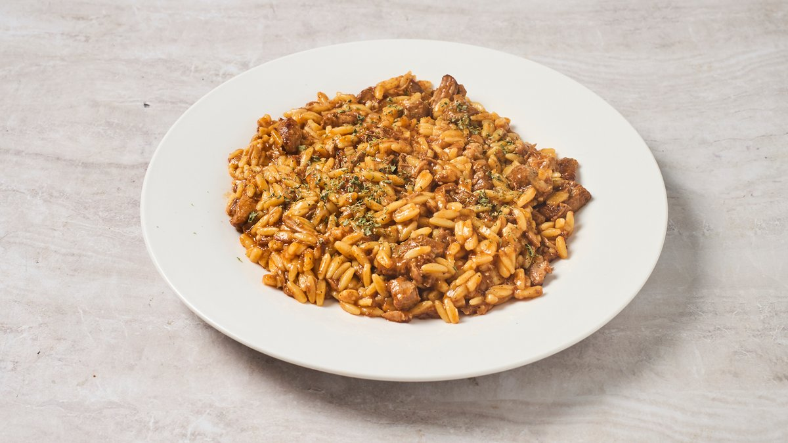
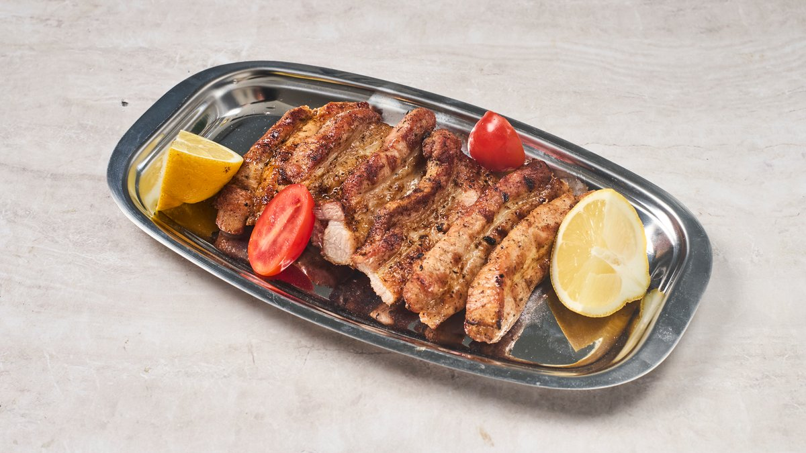
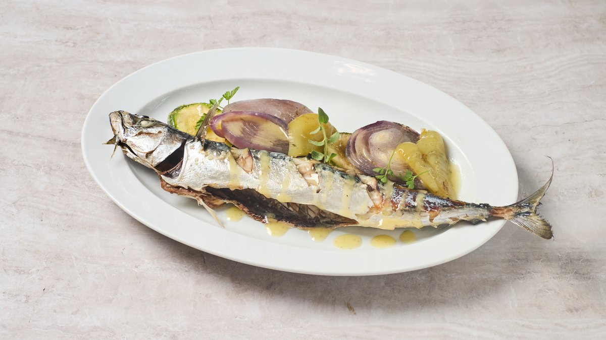

Most orderedTraditional Moussaka
Slow-roasted aubergine, minced beef simmered in tomato and cinnamon, finished with our airy béchamel. The recipe hasn't changed since the seventies — and neither has the love.
€9.90
Honest, home-style Greek cooking in a legendary Koukaki kitchen that has been feeding the neighbourhood since 1956. Five minutes from the Acropolis Museum — and a world away from the tourist menus.

70 Years
Honest Home-Cooked Tales
Memory Through Taste·Integrity of Ingredients·Metabolic Wisdom
Εκ Γης εἰς Τέχνην
Εκ Τέχνης εἰς Ἀπόλαυσιν
— · —
We honour our heritage by cooking with integrity, interweaving recipes with metabolic wisdom and the kind of care that nourishes both body and soul.
From Earth. To Table. To Memory.
Honest Choices. Richer Life.
Slow-cooked classics, daily-fresh vegetables, honest portions — priced for the neighbourhood, not the postcard.
Slow-roasted aubergine, minced beef simmered in tomato and cinnamon, finished with our airy béchamel. The recipe hasn't changed since the seventies — and neither has the love.

Layers of bucatini, spiced beef ragù and creamy béchamel — the Greek Sunday-lunch standard, served in the same kitchen since 1956.

Greek-style braised beef in slow-cooked tomato, garlic and bay, served over toasted kritharáki orzo. The dish that taught generations of Athenian kids what dinner should taste like.

Marinated pork belly seared over charcoal until crisp at the edges, juicy through the middle. Served simply — lemon, oregano, sea salt.

Whole mackerel grilled to order, plated with lemon-and-mustard vinaigrette and roasted onion. Omega-rich, deeply Mediterranean, ready in fifteen minutes.

Chicken fillet breast marinated in oregano and lemon, char-grilled and rested over dill-scented basmati. Honest protein, gently done.
The Open Pantry
We have nothing to hide. When you eat at Bell Kitchen, every plate is built from a short list of real ingredients we trust enough to name. We won't quietly use anything we wouldn't proudly put on our own table.
Sourced honestly · Named with pride
Strictly never in our food
The corner of Petmeza and Falirou has smelled of slow-cooked tomato since 1956 — when this room first opened as a working-class taverna for the families who built this part of Athens.
Today, under the Little NOE team, COOKaki continues the same idea with a lighter, more conscious hand: olive oil instead of butter, seasonal vegetables alongside the classics, and the same hospitality the neighbourhood has counted on for three generations.
We're proud to be the anti-tourist-trap that's somehow ended up minutes from the Acropolis Museum.
Every base sauce, every béchamel, every braise — made in our kitchen each morning.
Greek extra-virgin olive oil, vegan wine, vegetables from the local laïkí market.
Traditional flavour, modern execution. Less butter, more olive oil, more vegetables. You leave happy, not heavy.
Quiet street, real neighbourhood, two blocks from the most-visited museum in Athens.
A fresh Garden Dish of the Day, classic Greek salad - choriatiki, sfakianí pita with honey, and seasonal vegetable mezédes — not afterthoughts.
€15–20 per person for a full meal — exceptional value for the area and the quality of the ingredients.
Order on Wolt or efood — most deliveries land in under thirty minutes. WhatsApp orders go straight to the kitchen for take away.
4.8 ★ across 370+ Google reviews. 4.9 ★ on Tripadvisor. The address Athenians actually share with their friends.
4.9 on TripAdvisor · 4.6 on Google · 4.7 on Sluurpy — what guests keep telling us.
An Incredible Hidden Gem Highly recommend this wonderful restaurant! Our family of five was tired and hungry after touring Athens, looking for a true culinary experience to finish the day. From the moment we arrived, the owner was truly attentive to every detail.
Delighted to find out the new brilliant chef and his magic approach to traditional Greek and Mediterranean dishes. Indeed, high cooking technique, highlights traditional recipes. The fresh air to this local, more than half century old, resto left us with the best of impressions. As locals we go for it and highly recommend it for locals and visitors, business employees and families alike. Not to forget deserts and good wines! Congratulations to all contributors.
ABSOLUTELY FANTASTIC. A TRUE CULINARY EXPERIENCE. I wandered by this place on a visit to Athens looking for some traditional Greek food. The Chef explained the whole menu, letting us know where he sourced all of his ingredients (from local markets and traders) and how all of the dishes were cooked and put together. The food was cooked with passion and love. The service was exceptional, it felt like a private dining experience.
We found here by accident whilst visiting the Acropolis we would all say well worth seeking it out and giving the overpriced Tourist Trap places a miss.
Koukaki is what the rest of Athens used to be: leafy, low-rise, full of bakeries that still wrap your bread in paper. We're in the middle of it — and a five-minute walk from the Acropolis Museum.
Our food travels well. Choose the platform that suits you — or skip the apps and message us straight on WhatsApp for the fastest service.
Beyond the table
If you've trusted us with a Tuesday lunch, you can trust us with the moments that matter. Three more ways our kitchen comes to you.
Birthdays, baptisms, anniversaries, family gatherings of 12–50. The same honest cooking, set menus from €18/person, and a room that already feels like home.
See event options →We bring the kitchen to your office, your home, your terrace. Corporate dinners, christenings, intimate dinners for 20 — packed hot, plated by us, gone before you notice.
Catering inquiries →The Spartan olive oil we cook with. Curated ingredient kits. The pantry door is open — buy what we use, take it home with you.
Browse the pantry →Whether it's lunch after the museum or dinner with the kids on a Tuesday, the table is set the same way. .